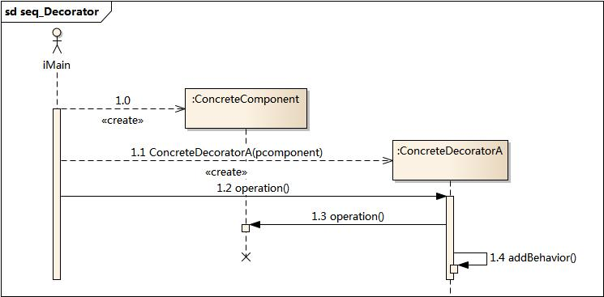
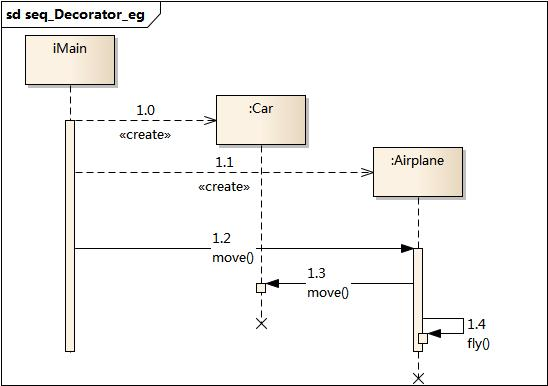
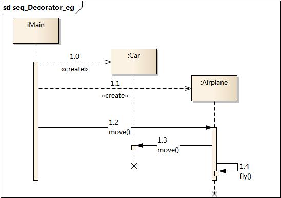

3. 装饰模式¶
3.1. 模式动机¶
一般有两种方式可以实现给一个类或对象增加行为：
继承机制，使用继承机制是给现有类添加功能的一种有效途径，通过继承一个现有类可以使得子类在拥有自身方法的同时还拥有父类的方法。但是这种方法是静态的，用户不能控制增加行为的方式和时机。
关联机制，即将一个类的对象嵌入另一个对象中，由另一个对象来决定是否调用嵌入对象的行为以便扩展自己的行为，我们称这个嵌入的对象为装饰器(Decorator)
装饰模式以对客户透明的方式动态地给一个对象附加上更多的责任，换言之，客户端并不会觉得对象在装饰前和装饰后有什么不同。装饰模式可以在不需要创造更多子类的情况下，将对象的功能加以扩展。这就是装饰模式的模式动机。
3.2. 模式定义¶
装饰模式(Decorator Pattern) ：动态地给一个对象增加一些额外的职责(Responsibility)，就增加对象功能来说，装饰模式比生成子类实现更为灵活。其别名也可以称为包装器(Wrapper)，与适配器模式的别名相同，但它们适用于不同的场合。根据翻译的不同，装饰模式也有人称之为“油漆工模式”，它是一种对象结构型模式。
3.3. 模式结构¶
装饰模式包含如下角色：
Component: 抽象构件
ConcreteComponent: 具体构件
Decorator: 抽象装饰类
ConcreteDecorator: 具体装饰类

3.4. 时序图¶
3.5. 代码分析¶
1///////////////////////////////////////////////////////////
2// ConcreteComponent.cpp
3// Implementation of the Class ConcreteComponent
4// Created on: 03-十月-2014 18:53:00
5// Original author: colin
6///////////////////////////////////////////////////////////
7
8#include "ConcreteComponent.h"
9#include <iostream>
10using namespace std;
11
12
13ConcreteComponent::ConcreteComponent(){
14
15}
16
17ConcreteComponent::~ConcreteComponent(){
18
19}
20
21void ConcreteComponent::operation(){
22 cout << "ConcreteComponent's normal operation!" << endl;
23}
1///////////////////////////////////////////////////////////
2// ConcreteDecoratorA.h
3// Implementation of the Class ConcreteDecoratorA
4// Created on: 03-十月-2014 18:53:00
5// Original author: colin
6///////////////////////////////////////////////////////////
7
8#if !defined(EA_6786B68E_DCE4_44c4_B26D_812F0B3C0382__INCLUDED_)
9#define EA_6786B68E_DCE4_44c4_B26D_812F0B3C0382__INCLUDED_
10
11#include "Decorator.h"
12#include "Component.h"
13
14class ConcreteDecoratorA : public Decorator
15{
16
17public:
18 ConcreteDecoratorA(Component* pcmp);
19 virtual ~ConcreteDecoratorA();
20
21 void addBehavior();
22 virtual void operation();
23
24};
25#endif // !defined(EA_6786B68E_DCE4_44c4_B26D_812F0B3C0382__INCLUDED_)
1///////////////////////////////////////////////////////////
2// ConcreteDecoratorA.cpp
3// Implementation of the Class ConcreteDecoratorA
4// Created on: 03-十月-2014 18:53:00
5// Original author: colin
6///////////////////////////////////////////////////////////
7
8#include "ConcreteDecoratorA.h"
9#include <iostream>
10using namespace std;
11
12ConcreteDecoratorA::ConcreteDecoratorA(Component* pcmp)
13:Decorator(pcmp)
14{
15
16}
17
18ConcreteDecoratorA::~ConcreteDecoratorA(){
19
20}
21
22void ConcreteDecoratorA::addBehavior(){
23 cout << "addBehavior AAAA" << endl;
24}
25
26
27void ConcreteDecoratorA::operation(){
28 Decorator::operation();
29 addBehavior();
30}
运行结果：

3.6. 模式分析¶
与继承关系相比，关联关系的主要优势在于不会破坏类的封装性，而且继承是一种耦合度较大的静态关系，无法在程序运行时动态扩展。在软件开发阶段，关联关系虽然不会比继承关系减少编码量，但是到了软件维护阶段，由于关联关系使系统具有较好的松耦合性，因此使得系统更加容易维护。当然，关联关系的缺点是比继承关系要创建更多的对象。
使用装饰模式来实现扩展比继承更加灵活，它以对客户透明的方式动态地给一个对象附加更多的责任。装饰模式可以在不需要创造更多子类的情况下，将对象的功能加以扩展。
3.7. 实例¶
实例：变形金刚
变形金刚在变形之前是一辆汽车，它可以在陆地上移动。当它变成机器人之后除了能够在陆地上移动之外，还可以说话；如果需要，它还可以变成飞机，除了在陆地上移动还可以在天空中飞翔。
 

3.8. 优点¶
装饰模式的优点:
装饰模式与继承关系的目的都是要扩展对象的功能，但是装饰模式可以提供比继承更多的灵活性。
可以通过一种动态的方式来扩展一个对象的功能，通过配置文件可以在运行时选择不同的装饰器，从而实现不同的行为。
通过使用不同的具体装饰类以及这些装饰类的排列组合，可以创造出很多不同行为的组合。可以使用多个具体装饰类来装饰同一对象，得到功能更为强大的对象。
具体构件类与具体装饰类可以独立变化，用户可以根据需要增加新的具体构件类和具体装饰类，在使用时再对其进行组合，原有代码无须改变，符合“开闭原则”
3.9. 缺点¶
装饰模式的缺点:
使用装饰模式进行系统设计时将产生很多小对象，这些对象的区别在于它们之间相互连接的方式有所不同，而不是它们的类或者属性值有所不同，同时还将产生很多具体装饰类。这些装饰类和小对象的产生将增加系统的复杂度，加大学习与理解的难度。
这种比继承更加灵活机动的特性，也同时意味着装饰模式比继承更加易于出错，排错也很困难，对于多次装饰的对象，调试时寻找错误可能需要逐级排查，较为烦琐。
3.10. 适用环境¶
在以下情况下可以使用装饰模式：
在不影响其他对象的情况下，以动态、透明的方式给单个对象添加职责。
需要动态地给一个对象增加功能，这些功能也可以动态地被撤销。
当不能采用继承的方式对系统进行扩充或者采用继承不利于系统扩展和维护时。不能采用继承的情况主要有两类：第一类是系统中存在大量独立的扩展，为支持每一种组合将产生大量的子类，使得子类数目呈爆炸性增长；第二类是因为类定义不能继承（如final类）.
3.11. 模式应用¶
3.12. 模式扩展¶
装饰模式的简化-需要注意的问题:
一个装饰类的接口必须与被装饰类的接口保持相同，对于客户端来说无论是装饰之前的对象还是装饰之后的对象都可以一致对待。
尽量保持具体构件类Component作为一个“轻”类，也就是说不要把太多的逻辑和状态放在具体构件类中，可以通过装饰类
对其进行扩展。 - 如果只有一个具体构件类而没有抽象构件类，那么抽象装饰类可以作为具体构件类的直接子类。
3.13. 总结¶
装饰模式用于动态地给一个对象增加一些额外的职责，就增加对象功 能来说，装饰模式比生成子类实现更为灵活。它是一种对象结构型模 式。
装饰模式包含四个角色：抽象构件定义了对象的接口，可以给这些对 象动态增加职责（方法）；具体构件定义了具体的构件对象，实现了 在抽象构件中声明的方法，装饰器可以给它增加额外的职责（方法）； 抽象装饰类是抽象构件类的子类，用于给具体构件增加职责，但是具 体职责在其子类中实现；具体装饰类是抽象装饰类的子类，负责向构 件添加新的职责。
使用装饰模式来实现扩展比继承更加灵活，它以对客户透明的方式动 态地给一个对象附加更多的责任。装饰模式可以在不需要创造更多子 类的情况下，将对象的功能加以扩展。
装饰模式的主要优点在于可以提供比继承更多的灵活性，可以通过一种动态的 方式来扩展一个对象的功能，并通过使用不同的具体装饰类以及这些装饰类的 排列组合，可以创造出很多不同行为的组合，而且具体构件类与具体装饰类可 以独立变化，用户可以根据需要增加新的具体构件类和具体装饰类；其主要缺 点在于使用装饰模式进行系统设计时将产生很多小对象，而且装饰模式比继承 更加易于出错，排错也很困难，对于多次装饰的对象，调试时寻找错误可能需 要逐级排查，较为烦琐。
装饰模式适用情况包括：在不影响其他对象的情况下，以动态、透明的方式给 单个对象添加职责；需要动态地给一个对象增加功能，这些功能也可以动态地 被撤销；当不能采用继承的方式对系统进行扩充或者采用继承不利于系统扩展 和维护时。
装饰模式可分为透明装饰模式和半透明装饰模式：在透明装饰模式中，要求客 户端完全针对抽象编程，装饰模式的透明性要求客户端程序不应该声明具体构 件类型和具体装饰类型，而应该全部声明为抽象构件类型；半透明装饰模式允 许用户在客户端声明具体装饰者类型的对象，调用在具体装饰者中新增的方法。